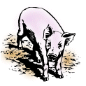

PigLet Servlet of the PigIron Java Class Library for
VSMAPI Programming
Copyright (c) 2008, Jack J. Woehr
jwoehr@softwoehr.com PO Box 51, Golden, Colorado 80402-0051 USA
All rights reserved.
PigLet is the PigIron Servlet.
- Serves up PigIron's VSMAPI functionality to web
applications.
- Written in Java.
- Runs in Apache
Tomcat.
- Simple REST
metaphor.
- Uses JSON as its data
interchange format.
- BSD-style license (Free Open Source, No Warranty).
Contents
Purpose
PigIron is an
open source Java library implementing the client to
IBM ® z/VM ® V5R3.0 an V5R4.0 Systems Management
Application Programming transactions over TCP/IP sockets
(referred to in PigIron documentation as VSMAPI). PigLet
is a Servlet which accepts PigIron transaction requests formatted
according to JSON and returns
in JSON format the results of the execution of the
requests.
Disclaimers
- PigIron is Open Source software and as such carries no
warranty or guarantee whatsoever. Please read the License below.
- The The PigIron
Project is not associated with the International Business Machines
Corporation (IBM), purveyors of fine mainframes and
mainframe operating systems, especially the System Z hardware platform
and the z/VM Operating
System.
- PigIron is under development and will certainly undergo
changes in its scope, code, documentation, implementation and
programming interfaces.
- SECURITY (OR LACK OF): Pigiron code supports Secure
Sockets Layer (SSL) in ts TCP/IP communications. To use SSL,
invoke the doIt(boolean ssl) method
of any PigIron VSMAPI function with the boolean flag set to
true.
IF YOU DO NOT USE SSL, THEN ONLY USE PIGIRON ON A SECURE
INTRANET BEHIND A FIREWALL.
Building
PigLet
Requirements
Building
- Unpack the pigiron and piglet directories side by
side.
- cd pigiron; ant clean;
ant
- cd ../piglet; ant clean;
ant
Output
The output is
piglet.war in the
piglet/dist
directory.
Some
Difficulties
PigLet was started as a NetBeans project, but
PigIron and PigLet diverged from NetBeans.
NetBeans creates a number of build and build-related files:
- piglet/build.xml
- piglet/nbproject/build-impl.xml
- piglet/nbproject/project.properties
- piglet/nbproject/private/private.properties
The private.properties file is where the classpath for the
J2EE platform resides. Here is an example, taken from the
author's build machine, of private.properties :
j2ee.platform.classpath=/home/jax/src/Apache/Tomcat/apache-tomcat-6.0.18/lib/annotations-api.jar:/home/jax/src/Apache/Tomcat/apache-tomcat-6.0.18/lib/catalina-ant.jar:/home/jax/src/Apache/Tomcat/apache-tomcat-6.0.18/lib/catalina-ha.jar:/home/jax/src/Apache/Tomcat/apache-tomca
t-6.0.18/lib/catalina-tribes.jar:/home/jax/src/Apache/Tomcat/apache-tomcat-6.0.18/lib/catalina.jar:/home/jax/src/Apache/Tomcat/apache-tomcat-6.0.18/lib/el-api.jar:/home/jax/src/Apache/Tomcat/apache-tomcat-6.0.18/lib/jasper-el.jar:/home/jax/src/Apache/Tomcat/apache-tomcat-6.0.
18/lib/jasper.jar:/home/jax/src/Apache/Tomcat/apache-tomcat-6.0.18/lib/jsp-api.jar:/home/jax/src/Apache/Tomcat/apache-tomcat-6.0.18/lib/servlet-api.jar:/home/jax/src/Apache/Tomcat/apache-tomcat-6.0.18/lib/tomcat-coyote.jar:/home/jax/src/Apache/Tomcat/apache-tomcat-6.0.18/lib/
tomcat-dbcp.jar:/home/jax/src/Apache/Tomcat/apache-tomcat-6.0.18/lib/tomcat-i18n-es.jar:/home/jax/src/Apache/Tomcat/apache-tomcat-6.0.18/lib/tomcat-i18n-fr.jar:/home/jax/src/Apache/Tomcat/apache-tomcat-6.0.18/lib/tomcat-i18n-ja.jar:/home/jax/src/Apache/Tomcat/apache-tomcat-6.
0.18/bin/tomcat-juli.jar
j2ee.server.instance=tomcat60:home=/home/jax/src/Apache/Tomcat/apache-tomcat-6.0.18
Your choices for the build are something like:
- Set up NetBeans for J2EE development and let the build use
your own private.properties file.
- Create the directory piglet/nbproject/private and create an
appropriate private.properties therein.
- Pass the values for j2ee.platform.classpath and
j2ee.server.instance as
-D variables to
the ant command
when you invoke it.
Launching PigLet
Requirements
- PigLet runs under Apache Tomcat 0.6.18 or
later.
- PigLet has pigiron.jar embedded in
piglet.war already
so setting up PigIron separately is not necessary.
Launching
It is assumed you
know how to (build,) install and run Tomcat.
- Start Tomcat
- Go in your browser to the Manager application
- Deploy piglet.war
Thanks to Free
Original Clipart at Designed to a T for the pig image